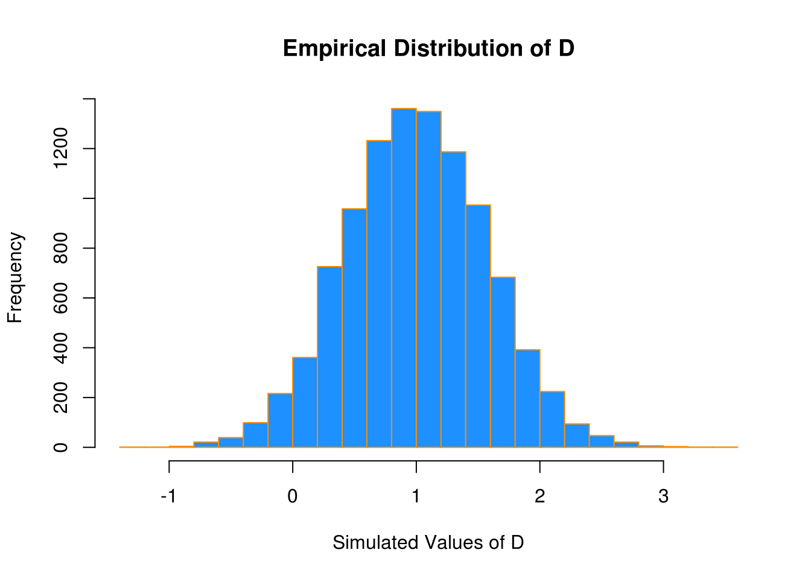
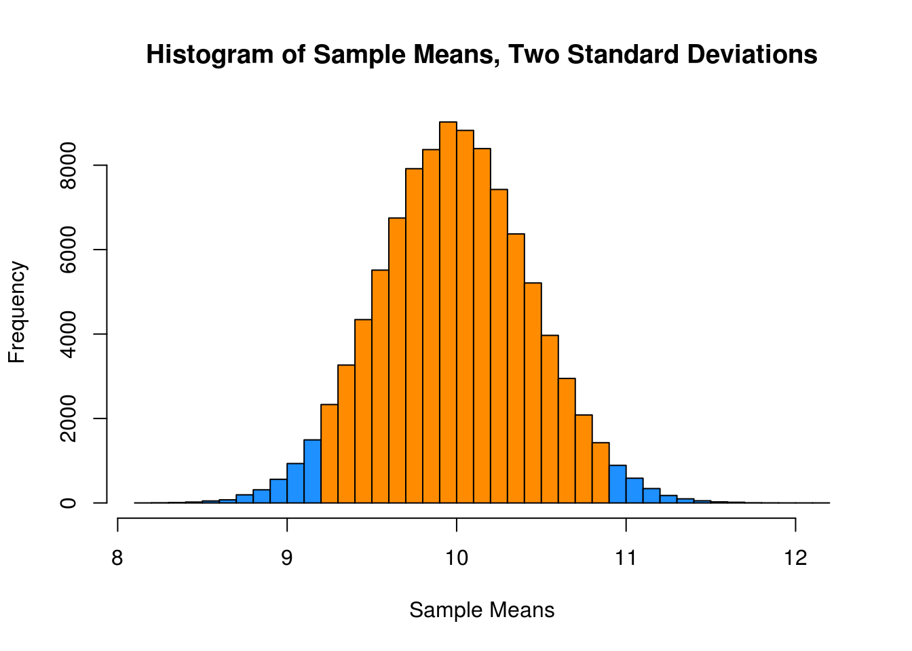

Chapter 5 Probability and Statistics in R
5.1 Probability in R
5.1.1 Distributions
When working with different statistical distributions, we often want to make probabilistic statements based on the distribution.
We typically want to know one of four things:
- The density (pdf) at a particular value.
- The distribution (cdf) at a particular value.
- The quantile value corresponding to a particular probability.
- A random draw of values from a particular distribution.
This used to be done with statistical tables printed in the back of textbooks. Now, R has functions for obtaining density, distribution, quantile and random values.
The general naming structure of the relevant R functions is:
dnamecalculates density (pdf) at inputx.pnamecalculates distribution (cdf) at inputx.qnamecalculates the quantile at an input probability.rnamegenerates a random draw from a particular distribution.
Note that name represents the name of the given distribution.
For example, consider a random variable \(X\) which is \(N(\mu = 2, \sigma^2 = 25)\). (Note, we are parameterizing using the variance \(\sigma^2\). R however uses the standard deviation.)
To calculate the value of the pdf at x = 3, that is, the height of the curve at x = 3, use:
dnorm(x = 3, mean = 2, sd = 5)## [1] 0.07820854To calculate the value of the cdf at x = 3, that is, \(P(X \leq 3)\), the probability that \(X\) is less than or equal to 3, use:
pnorm(q = 3, mean = 2, sd = 5)## [1] 0.5792597Or, to calculate the quantile for probability 0.975, use:
qnorm(p = 0.975, mean = 2, sd = 5)## [1] 11.79982Lastly, to generate a random sample of size n = 10, use:
rnorm(n = 10, mean = 2, sd = 5)## [1] 0.3197376 6.7931608 4.8880480 6.6562096 2.9259204 7.0289979
## [7] 1.0381810 -3.2789618 1.2326297 9.2643589These functions exist for many other distributions, including but not limited to:
| Command | Distribution |
|---|---|
*binom |
Binomial |
*t |
t |
*pois |
Poisson |
*f |
F |
*chisq |
Chi-Squared |
Where * can be d, p, q, and r. Each distribution will have its own set of parameters which need to be passed to the functions as arguments. For example, dbinom() would not have arguments for mean and sd, since those are not parameters of the distribution. Instead a binomial distribution is usually parameterized by \(n\) and \(p\), however R chooses to call them something else. To find the names that R uses we would use ?dbinom and see that R instead calls the arguments size and prob. For example:
dbinom(x = 6, size = 10, prob = 0.75)## [1] 0.145998Also note that, when using the dname functions with discrete distributions, they are the pmf of the distribution. For example, the above command is \(P(Y = 6)\) if \(Y \sim b(n = 10, p = 0.75)\). (The probability of flipping an unfair coin 10 times and seeing 6 heads, if the probability of heads is 0.75.)
5.2 Hypothesis Tests in R
A prerequisite for STAT 420 is an understanding of the basics of hypothesis testing. Recall the basic structure of hypothesis tests:
- An overall model and related assumptions are made. (The most common being observations following a normal distribution.)
- The null (\(H_{0}\)) and alternative (\(H_{1}\) or \(H_{A}\)) hypothesis are specified. Usually the null specifies a particular value of a parameter.
- With given data, the value of the test statistic is calculated.
- Under the general assumptions, as well as assuming the null hypothesis is true, the distribution of the test statistic is known.
- Given the distribution and value of the test statistic, as well as the form of the alternative hypothesis, we can calculate a p-value of the test.
- Based on the p-value and pre-specified level of significance, we make a decision. One of:
- Fail to reject the null hypothesis.
- Reject the null hypothesis.
We’ll do some quick review of two of the most common tests to show how they are performed using R.
5.2.1 One Sample t-Test: Review
Suppose \(x_{i} \sim \mathrm{N}(\mu,\sigma^{2})\) and we want to test \(H_{0}: \mu = \mu_{0}\) versus \(H_{1}: \mu \neq \mu_{0}.\)
Assuming \(\sigma\) is unknown, we use the one-sample Student’s \(t\) test statistic:
\[ t = \frac{\bar{x}-\mu_{0}}{s/\sqrt{n}} \sim t_{n-1}, \]
where \(\bar{x} = \displaystyle\frac{\sum_{i=1}^{n}x_{i}}{n}\) and \(s = \sqrt{\displaystyle\frac{1}{n - 1}\sum_{i=1}^{n}(x_i - \bar{x})^2}\).
A \(100(1 - \alpha)\)% confidence interval for \(\mu\) is given by,
\[ \bar{x} \pm t_{n-1}(\alpha/2)\frac{s}{\sqrt{n}} \]
where \(t_{n-1}(\alpha/2)\) is the critical value such that \(P\left(t>t_{n-1}(\alpha/2)\right) = \alpha/2\) for \(n-1\) degrees of freedom.
5.2.2 One Sample t-Test: Example
Suppose a grocery store sells “16 ounce” boxes of Captain Crisp cereal. A random sample of 9 boxes was taken and weighed. The weight in ounces are stored in the data frame capt_crisp.
capt_crisp = data.frame(weight = c(15.5, 16.2, 16.1, 15.8, 15.6, 16.0, 15.8, 15.9, 16.2))The company that makes Captain Crisp cereal claims that the average weight of a box is at least 16 ounces. We will assume the weight of cereal in a box is normally distributed and use a 0.05 level of significance to test the company’s claim.
To test \(H_{0}: \mu \geq 16\) versus \(H_{1}: \mu < 16\), the test statistic is
\[ t = \frac{\bar{x} - \mu_{0}}{s / \sqrt{n}} \]
The sample mean \(\bar{x}\) and the sample standard deviation \(s\) can be easily computed using R. We also create variables which store the hypothesized mean and the sample size.
x_bar = mean(capt_crisp$weight)
s = sd(capt_crisp$weight)
mu_0 = 16
n = 9We can then easily compute the test statistic.
t = (x_bar - mu_0) / (s / sqrt(n))
t## [1] -1.2Under the null hypothesis, the test statistic has a \(t\) distribution with \(n - 1\) degrees of freedom, in this case 8.
To complete the test, we need to obtain the p-value of the test. Since this is a one-sided test with a less-than alternative, we need the area to the left of -1.2 for a \(t\) distribution with 8 degrees of freedom. That is,
\[ P(t_{8} < -1.2) \]
pt(t, df = n - 1)## [1] 0.1322336We now have the p-value of our test, which is greater than our significance level (0.05), so we fail to reject the null hypothesis.
Alternatively, this entire process could have been completed using one line of R code.
t.test(x = capt_crisp$weight, mu = 16, alternative = c("less"), conf.level = 0.95)##
## One Sample t-test
##
## data: capt_crisp$weight
## t = -1.2, df = 8, p-value = 0.1322
## alternative hypothesis: true mean is less than 16
## 95 percent confidence interval:
## -Inf 16.05496
## sample estimates:
## mean of x
## 15.9We supply R with the data, the hypothesized value of \(\mu\), the alternative, and the confidence level. R then returns a wealth of information including:
- The value of the test statistic.
- The degrees of freedom of the distribution under the null hypothesis.
- The p-value of the test.
- The confidence interval which corresponds to the test.
- An estimate of \(\mu\).
Since the test was one-sided, R returned a one-sided confidence interval. If instead we wanted a two-sided interval for the mean weight of boxes of Captain Crisp cereal we could modify our code.
capt_test_results = t.test(capt_crisp$weight, mu = 16,
alternative = c("two.sided"), conf.level = 0.95)This time we have stored the results. By doing so, we can directly access portions of the output from t.test(). To see what information is available we use the names() function.
names(capt_test_results)## [1] "statistic" "parameter" "p.value" "conf.int" "estimate"
## [6] "null.value" "alternative" "method" "data.name"We are interested in the confidence interval which is stored in conf.int.
capt_test_results$conf.int## [1] 15.70783 16.09217
## attr(,"conf.level")
## [1] 0.95Let’s check this interval “by hand.” The one piece of information we are missing is the critical value, \(t_{n-1}(\alpha/2) = t_{8}(0.025)\), which can be calculated in R using the qt() function.
qt(0.975, df = 8)## [1] 2.306004So, the 95% CI for the mean weight of a cereal box is calculated by plugging into the formula,
\[ \bar{x} \pm t_{n-1}(\alpha/2) \frac{s}{\sqrt{n}} \]
c(mean(capt_crisp$weight) - qt(0.975, df = 8) * sd(capt_crisp$weight) / sqrt(9),
mean(capt_crisp$weight) + qt(0.975, df = 8) * sd(capt_crisp$weight) / sqrt(9))## [1] 15.70783 16.092175.2.3 Two Sample t-Test: Review
Suppose \(x_{i} \sim \mathrm{N}(\mu_{x}, \sigma^{2})\) and \(y_{i} \sim \mathrm{N}(\mu_{y}, \sigma^{2}).\)
Want to test \(H_{0}: \mu_{x} - \mu_{y} = \mu_{0}\) versus \(H_{1}: \mu_{x} - \mu_{y} \neq \mu_{0}.\)
Assuming \(\sigma\) is unknown, use the two-sample Student’s \(t\) test statistic:
\[ t = \frac{(\bar{x} - \bar{y})-\mu_{0}}{s_{p}\sqrt{\frac{1}{n}+\frac{1}{m}}} \sim t_{n+m-2}, \]
where \(\displaystyle\bar{x}=\frac{\sum_{i=1}^{n}x_{i}}{n}\), \(\displaystyle\bar{y}=\frac{\sum_{i=1}^{m}y_{i}}{m}\), and \(s_p^2 = \displaystyle\frac{(n-1)s_x^2+(m-1)s_y^2}{n+m-2}\).
A \(100(1-\alpha)\)% CI for \(\mu_{x}-\mu_{y}\) is given by
\[ (\bar{x} - \bar{y}) \pm t_{n+m-2}(\alpha/2) \left(s_{p}\textstyle\sqrt{\frac{1}{n}+\frac{1}{m}}\right), \]
where \(t_{n+m-2}(\alpha/2)\) is the critical value such that \(P\left(t>t_{n+m-2}(\alpha/2)\right)=\alpha/2\).
5.2.4 Two Sample t-Test: Example
Assume that the distributions of \(X\) and \(Y\) are \(\mathrm{N}(\mu_{1},\sigma^{2})\) and \(\mathrm{N}(\mu_{2},\sigma^{2})\), respectively. Given the \(n = 6\) observations of \(X\),
x = c(70, 82, 78, 74, 94, 82)
n = length(x)and the \(m = 8\) observations of \(Y\),
y = c(64, 72, 60, 76, 72, 80, 84, 68)
m = length(y)we will test \(H_{0}: \mu_{1} = \mu_{2}\) versus \(H_{1}: \mu_{1} > \mu_{2}\).
First, note that we can calculate the sample means and standard deviations.
x_bar = mean(x)
s_x = sd(x)
y_bar = mean(y)
s_y = sd(y)We can then calculate the pooled standard deviation.
\[ s_{p} = \sqrt{\frac{(n-1)s_{x}^{2}+(m-1)s_{y}^{2}}{n+m-2}} \]
s_p = sqrt(((n - 1) * s_x ^ 2 + (m - 1) * s_y ^ 2) / (n + m - 2))Thus, the relevant \(t\) test statistic is given by
\[ t = \frac{(\bar{x}-\bar{y})-\mu_{0}}{s_{p}\sqrt{\frac{1}{n}+\frac{1}{m}}}. \]
t = ((x_bar - y_bar) - 0) / (s_p * sqrt(1 / n + 1 / m))
t## [1] 1.823369Note that \(t \sim t_{n + m - 2} = t_{12}\), so we can calculate the p-value, which is
\[ P(t_{12} > 1.8233692). \]
1 - pt(t, df = n + m - 2)## [1] 0.04661961But, then again, we could have simply performed this test in one line of R.
t.test(x, y, alternative = c("greater"), var.equal = TRUE)##
## Two Sample t-test
##
## data: x and y
## t = 1.8234, df = 12, p-value = 0.04662
## alternative hypothesis: true difference in means is greater than 0
## 95 percent confidence interval:
## 0.1802451 Inf
## sample estimates:
## mean of x mean of y
## 80 72Recall that a two-sample \(t\)-test can be done with or without an equal variance assumption. Here var.equal = TRUE tells R we would like to perform the test under the equal variance assumption.
Above we carried out the analysis using two vectors x and y. In general, we will have a preference for using data frames.
t_test_data = data.frame(values = c(x, y),
group = c(rep("A", length(x)), rep("B", length(y))))We now have the data stored in a single variables (values) and have created a second variable (group) which indicates which “sample” the value belongs to.
t_test_data## values group
## 1 70 A
## 2 82 A
## 3 78 A
## 4 74 A
## 5 94 A
## 6 82 A
## 7 64 B
## 8 72 B
## 9 60 B
## 10 76 B
## 11 72 B
## 12 80 B
## 13 84 B
## 14 68 BNow to perform the test, we still use the t.test() function but with the ~ syntax and a data argument.
t.test(values ~ group, data = t_test_data,
alternative = c("greater"), var.equal = TRUE)##
## Two Sample t-test
##
## data: values by group
## t = 1.8234, df = 12, p-value = 0.04662
## alternative hypothesis: true difference in means is greater than 0
## 95 percent confidence interval:
## 0.1802451 Inf
## sample estimates:
## mean in group A mean in group B
## 80 725.3 Simulation
Simulation and model fitting are related but opposite processes.
- In simulation, the data generating process is known. We will know the form of the model as well as the value of each of the parameters. In particular, we will often control the distribution and parameters which define the randomness, or noise in the data.
- In model fitting, the data is known. We will then assume a certain form of model and find the best possible values of the parameters given the observed data. Essentially we are seeking to uncover the truth. Often we will attempt to fit many models, and we will learn metrics to assess which model fits best.

Simulation vs Modeling
Often we will simulate data according to a process we decide, then use a modeling method seen in class. We can then verify how well the method works, since we know the data generating process.
One of the biggest strengths of R is its ability to carry out simulations using built-in functions for generating random samples from certain distributions. We’ll look at two very simple examples here, however simulation will be a topic we revisit several times throughout the course.
5.3.1 Paired Differences
Consider the model:
\[ \begin{split} X_{11}, X_{12}, \ldots, X_{1n} \sim N(\mu_1,\sigma^2)\\ X_{21}, X_{22}, \ldots, X_{2n} \sim N(\mu_2,\sigma^2) \end{split} \]
Assume that \(\mu_1 = 6\), \(\mu_2 = 5\), \(\sigma^2 = 4\) and \(n = 25\).
Let
\[ \begin{aligned} \bar{X}_1 &= \displaystyle\frac{1}{n}\sum_{i=1}^{n}X_{1i}\\ \bar{X}_2 &= \displaystyle\frac{1}{n}\sum_{i=1}^{n}X_{2i}\\ D &= \bar{X}_1 - \bar{X}_2. \end{aligned} \]
Suppose we would like to calculate \(P(0 < D < 2)\). First we will need to obtain the distribution of \(D\).
Recall,
\[ \bar{X}_1 \sim N\left(\mu_1,\frac{\sigma^2}{n}\right) \]
and
\[ \bar{X}_2 \sim N\left(\mu_2,\frac{\sigma^2}{n}\right). \]
Then,
\[ D = \bar{X}_1 - \bar{X}_2 \sim N\left(\mu_1-\mu_2, \frac{\sigma^2}{n} + \frac{\sigma^2}{n}\right) = N\left(6-5, \frac{4}{25} + \frac{4}{25}\right). \]
So,
\[ D \sim N(\mu = 1, \sigma^2 = 0.32). \]
Thus,
\[ P(0 < D < 2) = P(D < 2) - P(D < 0). \]
This can then be calculated using R without a need to first standardize, or use a table.
pnorm(2, mean = 1, sd = sqrt(0.32)) - pnorm(0, mean = 1, sd = sqrt(0.32))## [1] 0.9229001An alternative approach, would be to simulate a large number of observations of \(D\) then use the empirical distribution to calculate the probability.
Our strategy will be to repeatedly:
- Generate a sample of 25 random observations from \(N(\mu_1 = 6,\sigma^2 = 4)\). Call the mean of this sample \(\bar{x}_{1s}\).
- Generate a sample of 25 random observations from \(N(\mu_1 = 5,\sigma^2 = 4)\). Call the mean of this sample \(\bar{x}_{2s}\).
- Calculate the differences of the means, \(d_s = \bar{x}_{1s} - \bar{x}_{2s}\).
We will repeat the process a large number of times. Then we will use the distribution of the simulated observations of \(d_s\) as an estimate for the true distribution of \(D\).
set.seed(42)
num_samples = 10000
differences = rep(0, num_samples)Before starting our for loop to perform the operation, we set a seed for reproducibility, create and set a variable num_samples which will define the number of repetitions, and lastly create a variables differences which will store the simulate values, \(d_s\).
By using set.seed() we can reproduce the random results of rnorm() each time starting from that line.
for (s in 1:num_samples) {
x1 = rnorm(n = 25, mean = 6, sd = 2)
x2 = rnorm(n = 25, mean = 5, sd = 2)
differences[s] = mean(x1) - mean(x2)
}To estimate \(P(0 < D < 2)\) we will find the proportion of values of \(d_s\) (among the 10000 values of \(d_s\) generated) that are between 0 and 2.
mean(0 < differences & differences < 2)## [1] 0.9222Recall that above we derived the distribution of \(D\) to be \(N(\mu = 1, \sigma^2 = 0.32)\)
If we look at a histogram of the differences, we find that it looks very much like a normal distribution.
hist(differences, breaks = 20,
main = "Empirical Distribution of D",
xlab = "Simulated Values of D",
col = "dodgerblue",
border = "darkorange")
Also the sample mean and variance are very close to to what we would expect.
mean(differences)## [1] 1.001423var(differences)## [1] 0.3230183We could have also accomplished this task with a single line of more “idiomatic” R.
set.seed(42)
diffs = replicate(10000, mean(rnorm(25, 6, 2)) - mean(rnorm(25, 5, 2)))Use ?replicate to take a look at the documentation for the replicate function and see if you can understand how this line performs the same operations that our for loop above executed.
mean(differences == diffs)## [1] 1We see that by setting the same seed for the randomization, we actually obtain identical results!
5.3.2 Distribution of a Sample Mean
For another example of simulation, we will simulate observations from a Poisson distribution, and examine the empirical distribution of the sample mean of these observations.
Recall, if
\[ X \sim Pois(\mu) \]
then
\[ E[X] = \mu \]
and
\[ Var[X] = \mu. \]
Also, recall that for a random variable \(X\) with finite mean \(\mu\) and finite variance \(\sigma^2\), the central limit theorem tells us that the mean, \(\bar{X}\) of a random sample of size \(n\) is approximately normal for large values of \(n\). Specifically, as \(n \to \infty\),
\[ \bar{X} \overset{d}{\to} N\left(\mu, \frac{\sigma^2}{n}\right). \]
The following verifies this result for a Poisson distribution with \(\mu = 10\) and a sample size of \(n = 50\).
set.seed(1337)
mu = 10
sample_size = 50
samples = 100000
x_bars = rep(0, samples)for(i in 1:samples){
x_bars[i] = mean(rpois(sample_size, lambda = mu))
}x_bar_hist = hist(x_bars, breaks = 50,
main = "Histogram of Sample Means",
xlab = "Sample Means")
Now we will compare sample statistics from the empirical distribution with their known values based on the parent distribution.
c(mean(x_bars), mu)## [1] 10.00008 10.00000c(var(x_bars), mu / sample_size)## [1] 0.1989732 0.2000000c(sd(x_bars), sqrt(mu) / sqrt(sample_size))## [1] 0.4460641 0.4472136And here, we will calculate the proportion of sample means that are within 2 standard deviations of the population mean.
mean(x_bars > mu - 2 * sqrt(mu) / sqrt(sample_size) &
x_bars < mu + 2 * sqrt(mu) / sqrt(sample_size))## [1] 0.95429This last histogram uses a bit of a trick to approximately shade the bars that are within two standard deviations of the mean.)
shading = ifelse(x_bar_hist$breaks > mu - 2 * sqrt(mu) / sqrt(sample_size) &
x_bar_hist$breaks < mu + 2 * sqrt(mu) / sqrt(sample_size),
"darkorange", "dodgerblue")
x_bar_hist = hist(x_bars, breaks = 50, col = shading,
main = "Histogram of Sample Means, Two Standard Deviations",
xlab = "Sample Means")